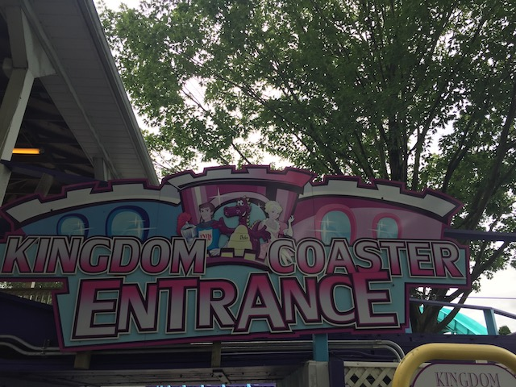

| |
Dutch Wonderland Review

Dutch Wonderland is a small little park primarily for children. But as far as childrens parks go, this one does have a decent amount of it, with three credits, and two of which are actually decent family coasters. Yes. Neither of those coasters are anything truly crazy (though one actually is surprisingly unique). But they are a lot of fun, and for a park like this, a perfect fit. I know when I was there, I primarily treated the park like a credit whoring stop. Unfortunately, this one seemed to be a little more judgemental than other similar credit whoring parks. So yeah. Dutch Wonderland is a bit more.....grab the credits and get out of there than other credit whoring parks, acting more like those Family Fun Centers, despite being the same size as some of the bigger ones simply due to the clinetele. Who knows. Maybe we just hit the park on a bad day. But hey. This is a credit whoring place. And 2 of the coasters were decent family coasters that I have reviews of down below. But if you want even more information on what all Dutch Wonderland has to offer, well here you go.
Rollercoasters
There is a link to a review of all the Rollercoasters at Dutch Wonderland
Top Coasters
Kingdom Coaster Review

Merlins Mayhem Review

Kiddy Coasters
Joust Review

Flat Rides
I did not ride any of the flat rides at Dutch Wonderland. However, their lineup consists of a tilt a whirl, teacups, a trabant, some chairswings, a cliffhanger, bumper cars, and an assortment of kiddy flat rides. A decent selection for a small little park like this.
Water Rides
Dutch Wonderland only has one water ride. Double Splash Flume. Now I never rode this. But from what I can tell, this is a very ordinary log flume. Nothing about this ride stands out in any way. You could find this log flume at a carnival. But on a hot day, it should cool you off. And if you're just at Dutch Wonderland, any log flume is better than no log flume. And it's still a fun ride. Even if its fairly generic and standard. Oh yeah. I think there's also a water slide. Not a proper one. One of those Wet'N'Dry slides they have in theme parks without it being a water park. Those are fun.
Dining
I never ate at Dutch Wonderland. I don't think I'm missing anything special though in all honesty.
Theming and Other Attractions
Here are the reviews of all the other stuff at Dutch Wonderland. The theming is honestly....on par with that at a Golf'N'Stuff style place. Seriously. It has the same tacky medieval castle theming that seems to be a really popular choice of theming for Family Entertainment Centers. If it wasn't for the fact that there's no Mini Golf here, you would swear that this was a Golf'N'Stuff. Speaking of other stuff to do, there essentially is none. It's primarily rides. The one thing they seem to advertise aside from rides is the shows. None of them look interesting. But then again, I treat the place as a credit whoring stop. If you're a family with young kids, maybe these shows appeal to you. Huh. Apparently they have multiple dive shows. I guess the people at Dutch Wonderland know a lot of divers.
In Conclusion
Dutch Wonderland may not be an amazing park or anything, but it is a small little park that seems to be a really good fit for families and young children. Not only do they have a decent array of flat rides and other rides, but they also have 3 roller coasters. 2 of which are actually decent family coasters. Yeah. They're still family coasters and nothing truly special. I highly doubt anyone is having a kiddy woodie or an S&S Family Invert in their Top 10. However....for what it is as a small family theme park, it's pretty good. I could easily see a family with young kids falling in love with this place and thinking its a better fit for them as opposed to bigger more corporate theme parks, such as Dorney Park and Hersheypark. Also, the park is located in Amish country, so you may very well see some Amish folk in the park (How can they enjoy it when the park uses electricity?). I enjoyed credit whoring the place and while I most likely won't be coming back, I'm happy I spent what time I did here.
Enthusiast FAQs.
*Are there kiddy coaster restrictions? - Nope, you can ride the kiddy coaster here.

Tips
*Be extra courteous and don't give anyone a reason to pay attention to you.
*Get all the credits
*Have Fun!!!!
Theme Park Category:
Credit Whoring
Location
Lancaster, Pennsylvania, US
Last Day Visited
June 26, 2021
Video
I do not have enough footage for a Dutch Wonderland video. There's really no need for a video of a park this small, but it's not impossible to say that this park will ever get a video of its own.
Complete Update List
2021
East Coast Trip 2021
Here's a link to the parks website.
Home
|